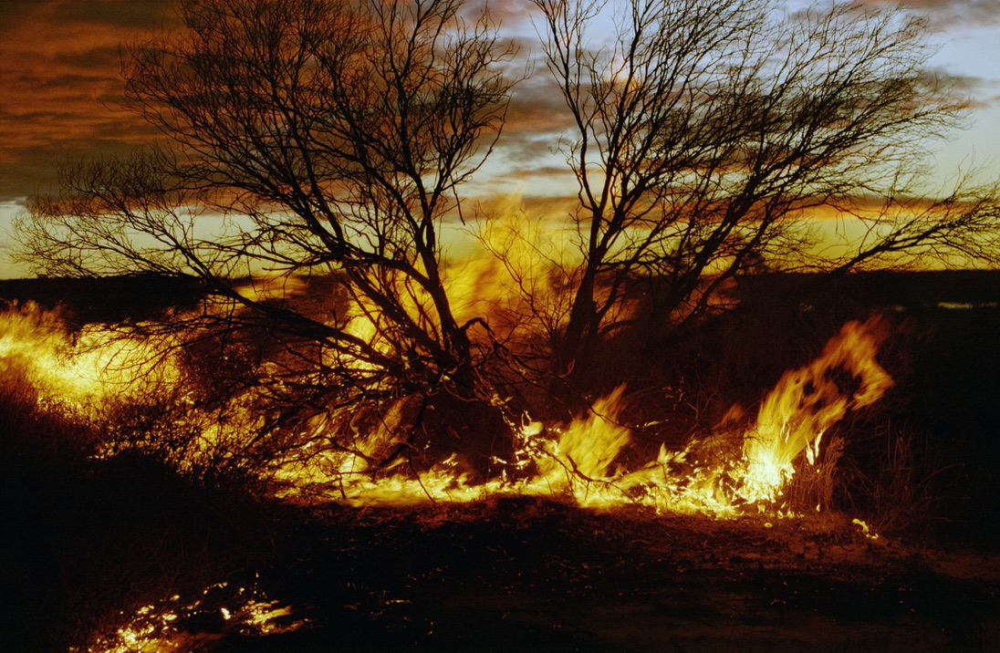

When the western sky's ablaze
And the sun lays down to rest
When the curlew starts to cry
And the birds fly home to roost
When the full moon begins to rise
Satin moonbeams on my face
Beauty of the night goes far beyond
Far beyond both time and place
No one's lost who finds the moon
Or the sweetness of the wattle's bloom
Rebirth with the rain in spring
Dingo's howl on the autumn wind
Spirit of the moon he calls me home, woah
Spirit of the moon he guides me home
Moon, it draws me to the scrub
Night voices raised in song
Past the water lilies bloom
In that tranquil billabong
Walkin' on the shadowed leaves
That are reflected by the moon
To the rocks and hills and caves
Where the dingo's pups are born
No one's lost who finds the moon
Or the sweetness of the wattle's bloom
Rebirth with the rain in spring
Dingo's howl on the autumn wind
Spirit of the moon he calls me home, woah
Spirit of the moon he guides me home
Stars a-blazin' across the sky
In the brilliance of the Milky Way
I'm surrounded by the beauty
Of every night and every day
Walkin' towards that mornin' moonset
Caress of moonlight on my skin
Knowin' that freedom of not carin'
Why I'm goin' or where I've been
No one's lost who finds the moon
Or the sweetness of the wattle's bloom
Rebirth with the rain in spring
Dingo's howl on the autumn wind
Spirit of the moon he calls me home, woah
Spirit of the moon he guides me home
https://open.spotify.com/playlist/1YvJTmdmHX06OVfqJXvCan?si=dc2c4c7be7144300
A raging fire of that kind of fossilised wood only the desert can offer. Hard claypan, no swag fires and we've said goodye to the Cooper. It became oddly normal, floating, sailing, living on that ephemeral watercourse. Last night we were walking in a dream. We left the canoes well after noon, on a south-east bearing back to the car. Aprox 20kms of red-dune desert country, running north-south through the never-never. The sun rolled over as we made the pipeline track. A standoff between Mitch and a camel, 25m advancing slowly. He didn't take the shot. Kangaroos on last light, 3 red ones. The last 4kms in the milky dark night. The moon left us in the morning, leaving the canopy of stars. No shoes, we left them before sunset. Walking softly through the night, we completed our journey.
